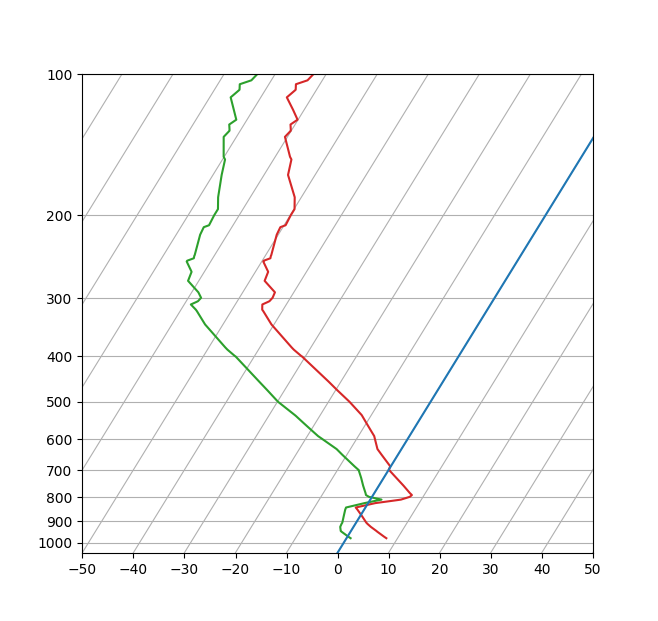
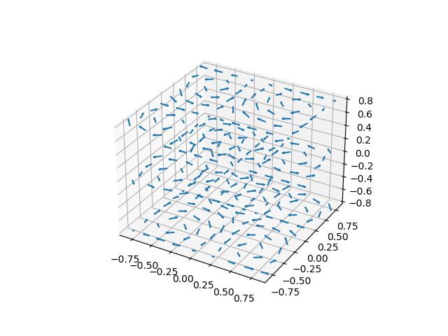

New in matplotlib 1.4¶
Thomas A. Caswell served as the release manager for the 1.4 release.
Table of Contents
Note
matplotlib 1.4 supports Python 2.6, 2.7, 3.3, and 3.4
New colormap¶
In heatmaps, a green-to-red spectrum is often used to indicate intensity of
activity, but this can be problematic for the red/green colorblind. A new,
colorblind-friendly colormap is now available at matplotlib.cm.Wistia.
This colormap maintains the red/green symbolism while achieving deuteranopic
legibility through brightness variations. See
here
for more information.
The nbagg backend¶
Phil Elson added a new backend, named "nbagg", which enables interactive figures in a live IPython notebook session. The backend makes use of the infrastructure developed for the webagg backend, which itself gives standalone server backed interactive figures in the browser, however nbagg does not require a dedicated matplotlib server as all communications are handled through the IPython Comm machinery.
As with other backends nbagg can be enabled inside the IPython notebook with:
import matplotlib
matplotlib.use('nbagg')
Once figures are created and then subsequently shown, they will placed in an interactive widget inside the notebook allowing panning and zooming in the same way as any other matplotlib backend. Because figures require a connection to the IPython notebook server for their interactivity, once the notebook is saved, each figure will be rendered as a static image - thus allowing non-interactive viewing of figures on services such as nbviewer.
New plotting features¶
Power-law normalization¶
Ben Gamari added a power-law normalization method,
PowerNorm. This class maps a range of
values to the interval [0,1] with power-law scaling with the exponent
provided by the constructor's gamma argument. Power law normalization
can be useful for, e.g., emphasizing small populations in a histogram.
Fully customizable boxplots¶
Paul Hobson overhauled the boxplot() method such
that it is now completely customizable in terms of the styles and positions
of the individual artists. Under the hood, boxplot()
relies on a new function (boxplot_stats()), which
accepts any data structure currently compatible with
boxplot(), and returns a list of dictionaries
containing the positions for each element of the boxplots. Then
a second method, bxp is called to draw the boxplots
based on the stats.
The boxplot() function can be used as before to
generate boxplots from data in one step. But now the user has the
flexibility to generate the statistics independently, or to modify the
output of boxplot_stats() prior to plotting
with bxp.
Lastly, each artist (e.g., the box, outliers, cap, notches) can now be toggled on or off and their styles can be passed in through individual kwargs. See the examples: Artist customization in box plots and Boxplot drawer function
Added a bool kwarg, manage_xticks, which if False disables the management
of the ticks and limits on the x-axis by bxp().
Support for datetime axes in 2d plots¶
Andrew Dawson added support for datetime axes to
contour(), contourf(),
pcolormesh() and pcolor().
Support for additional spectrum types¶
Todd Jennings added support for new types of frequency spectrum plots:
magnitude_spectrum(),
phase_spectrum(), and
angle_spectrum(), as well as corresponding functions
in mlab.
He also added these spectrum types to specgram(),
as well as adding support for linear scaling there (in addition to the
existing dB scaling). Support for additional spectrum types was also added to
specgram().
He also increased the performance for all of these functions and plot types.
Support for detrending and windowing 2D arrays in mlab¶
Todd Jennings added support for 2D arrays in the
detrend_mean(), detrend_none(),
and detrend(), as well as adding
matplotlib.mlab.apply_window which support windowing 2D arrays.
Support for strides in mlab¶
Todd Jennings added some functions to mlab to make it easier to use NumPy
strides to create memory-efficient 2D arrays. This includes
matplotlib.mlab.stride_repeat, which repeats an array to create a 2D
array, and stride_windows(), which uses a moving window
to create a 2D array from a 1D array.
Formatter for new-style formatting strings¶
Added StrMethodFormatter which does the same job as
FormatStrFormatter, but accepts new-style formatting strings
instead of printf-style formatting strings
Consistent grid sizes in streamplots¶
streamplot() uses a base grid size of 30x30 for both
density=1 and density=(1, 1). Previously a grid size of 30x30 was used for
density=1, but a grid size of 25x25 was used for density=(1, 1).
Get a list of all tick labels (major and minor)¶
Added the kwarg 'which' to Axes.get_xticklabels,
Axes.get_yticklabels and
Axis.get_ticklabels. 'which' can be 'major', 'minor', or
'both' select which ticks to return, like
set_ticks_position. If 'which' is None then the old
behaviour (controlled by the bool minor).
Separate horizontal/vertical axes padding support in ImageGrid¶
The kwarg 'axes_pad' to mpl_toolkits.axes_grid1.axes_grid.ImageGrid can now
be a tuple if separate horizontal/vertical padding is needed.
This is supposed to be very helpful when you have a labelled legend next to
every subplot and you need to make some space for legend's labels.
Support for skewed transformations¶
The Affine2D gained additional methods
skew and skew_deg to create skewed transformations. Additionally,
matplotlib internals were cleaned up to support using such transforms in
Axes. This transform is important for some plot types,
specifically the Skew-T used in meteorology.

Skewt¶
Support for specifying properties of wedge and text in pie charts.¶
Added the kwargs 'wedgeprops' and 'textprops' to pie
to accept properties for wedge and text objects in a pie. For example, one can
specify wedgeprops = {'linewidth':3} to specify the width of the borders of
the wedges in the pie. For more properties that the user can specify, look at
the docs for the wedge and text objects.
Fixed the direction of errorbar upper/lower limits¶
Larry Bradley fixed the errorbar() method such
that the upper and lower limits (lolims, uplims, xlolims,
xuplims) now point in the correct direction.
More consistent add-object API for Axes¶
Added the Axes method add_image to put image
handling on a par with artists, collections, containers, lines, patches,
and tables.
Violin Plots¶
Per Parker, Gregory Kelsie, Adam Ortiz, Kevin Chan, Geoffrey Lee, Deokjae Donald Seo, and Taesu Terry Lim added a basic implementation for violin plots. Violin plots can be used to represent the distribution of sample data. They are similar to box plots, but use a kernel density estimation function to present a smooth approximation of the data sample used. The added features are:
violin - Renders a violin plot from a collection of
statistics.
violin_stats() - Produces a collection of statistics
suitable for rendering a violin plot.
violinplot() - Creates a violin plot from a set of
sample data. This method makes use of violin_stats()
to process the input data, and violin_stats() to
do the actual rendering. Users are also free to modify or replace the output of
violin_stats() in order to customize the violin plots
to their liking.
This feature was implemented for a software engineering course at the University of Toronto, Scarborough, run in Winter 2014 by Anya Tafliovich.
More markevery options to show only a subset of markers¶
Rohan Walker extended the markevery property in
Line2D. You can now specify a subset of markers to
show with an int, slice object, numpy fancy indexing, or float. Using a float
shows markers at approximately equal display-coordinate-distances along the
line.
Fixed the mouse coordinates giving the wrong theta value in Polar graph¶
Added code to
transform_non_affine
to ensure that the calculated theta value was between the range of 0 and 2 * pi
since the problem was that the value can become negative after applying the
direction and rotation to the theta calculation.
Simple quiver plot for mplot3d toolkit¶
A team of students in an Engineering Large Software Systems course, taught
by Prof. Anya Tafliovich at the University of Toronto, implemented a simple
version of a quiver plot in 3D space for the mplot3d toolkit as one of their
term project. This feature is documented in quiver().
The team members are: Ryan Steve D'Souza, Victor B, xbtsw, Yang Wang, David,
Caradec Bisesar and Vlad Vassilovski.

Quiver3d¶
polar-plot r-tick locations¶
Added the ability to control the angular position of the r-tick labels
on a polar plot via set_rlabel_position.
Date handling¶
n-d array support for date conversion¶
Andrew Dawson added support for n-d array handling to
matplotlib.dates.num2date(), matplotlib.dates.date2num()
and matplotlib.dates.datestr2num(). Support is also added to the unit
conversion interfaces matplotlib.dates.DateConverter and
matplotlib.units.Registry.
Configuration (rcParams)¶
savefig.transparent added¶
Controls whether figures are saved with a transparent
background by default. Previously savefig always defaulted
to a non-transparent background.
axes.titleweight¶
Added rcParam to control the weight of the title
axes.formatter.useoffset added¶
Controls the default value of useOffset in ScalarFormatter. If
True and the data range is much smaller than the data average, then
an offset will be determined such that the tick labels are
meaningful. If False then the full number will be formatted in all
conditions.
nbagg.transparent added¶
Controls whether nbagg figures have a transparent
background. nbagg.transparent is True by default.
XDG compliance¶
Matplotlib now looks for configuration files (both rcparams and style) in XDG compliant locations.
style package added¶
You can now easily switch between different styles using the new style
package:
>>> from matplotlib import style
>>> style.use('dark_background')
Subsequent plots will use updated colors, sizes, etc. To list all available styles, use:
>>> print style.available
You can add your own custom <style name>.mplstyle files to
~/.matplotlib/stylelib or call use with a URL pointing to a file with
matplotlibrc settings.
Note that this is an experimental feature, and the interface may change as users test out this new feature.
Backends¶
Qt5 backend¶
Martin Fitzpatrick and Tom Badran implemented a Qt5 backend. The differences in namespace locations between Qt4 and Qt5 was dealt with by shimming Qt4 to look like Qt5, thus the Qt5 implementation is the primary implementation. Backwards compatibility for Qt4 is maintained by wrapping the Qt5 implementation.
The Qt5Agg backend currently does not work with IPython's %matplotlib magic.
The 1.4.0 release has a known bug where the toolbar is broken. This can be fixed by:
cd path/to/installed/matplotlib
wget https://github.com/matplotlib/matplotlib/pull/3322.diff
# unix2dos 3322.diff (if on windows to fix line endings)
patch -p2 < 3322.diff
Qt4 backend¶
Rudolf Höfler changed the appearance of the subplottool. All sliders are vertically arranged now, buttons for tight layout and reset were added. Furthermore, the subplottool is now implemented as a modal dialog. It was previously a QMainWindow, leaving the SPT open if one closed the plot window.
In the figure options dialog one can now choose to (re-)generate a simple automatic legend. Any explicitly set legend entries will be lost, but changes to the curves' label, linestyle, et cetera will now be updated in the legend.
Interactive performance of the Qt4 backend has been dramatically improved under windows.
The mapping of key-signals from Qt to values matplotlib understands was greatly improved (For both Qt4 and Qt5).
Cairo backends¶
The Cairo backends are now able to use the cairocffi bindings which are more actively maintained than the pycairo bindings.
Gtk3Agg backend¶
The Gtk3Agg backend now works on Python 3.x, if the cairocffi bindings are installed.
PDF backend¶
Added context manager for saving to multi-page PDFs.
Text¶
Text URLs supported by SVG backend¶
The SVG backend will now render Text objects'
url as a link in output SVGs. This allows one to make clickable text in
saved figures using the url kwarg of the Text
class.
Anchored sizebar font¶
Added the fontproperties kwarg to
AnchoredSizeBar to
control the font properties.
Sphinx extensions¶
The :context: directive in the plot_directive
Sphinx extension can now accept an optional reset setting, which will
cause the context to be reset. This allows more than one distinct context to
be present in documentation. To enable this option, use :context: reset
instead of :context: any time you want to reset the context.
Legend and PathEffects documentation¶
The Legend guide and Path effects guide have both been updated to better reflect the full potential of each of these powerful features.
Widgets¶
Span Selector¶
Added an option span_stays to the
SpanSelector which makes the selector
rectangle stay on the axes after you release the mouse.
GAE integration¶
Matplotlib will now run on google app engine.